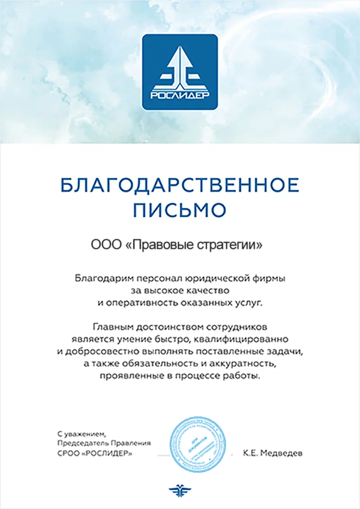

Внесение ПО в реестр Отечественного программного обеспечения
Получите преимущества:
- налоговые льготы
- грантовую государственную поддержку
- возможность участвовать в государственных и муниципальных закупках.
Что сделаем
- 1 Расскажем как происходит включение в реестр: порядок, сроки, требования, документы.
- 2 Проведем проверку вашей документации на соответствие требованиям. Укажем на проблемные моменты, исправим или дополним. Если у вас нет документации, то часть документации мы подготовим самостоятельно. А часть подготовим по дополнительной оплате (в зависимости от сложности ПО).
- 3 Подготовим и направим заявление.
- 4Возьмем на себя всю коммуникацию с представителями Реестра.
План действий
- 1 Свяжитесь с нами. Расскажите о вашем ПО. Мы расскажем как происходит процедура регистрации.
- 2 Проверка технического соответствия ПО. Мы расскажем какие технические требования к ПО для включения в реестр.
- 3 Сбор информации о ПО и необходимых документов. - Вы заполняете анкету с информацией о ПО (используемые технологии, цели, задачи, требования к установке и прочее); - Мы подскажем и при необходимости покажем какие юридические документы необходимо вам подготовить. - Мы подскажем и покажем какие дополнительные документы необходимо предоставить.
- 4 Подготовка документации. - Если документация есть: мы проверим на соответствие требованиям Минцифр, при необходимости поправим и дополним; - Если документации нет: мы подготовим описание процессов обеспечивающих поддержание жизненного цикла ПО и расскажем как подготовить описание функциональных характеристик и инструкцию по эксплуатации. (По договоренности и дополнительной оплате, мы можем подготовить за вас описание функциональных характеристик. Стоимость зависит от сложности вашего ПО, средняя стоимость 15 000 рублей).
- 5 Подготовка проверочного экземпляра. - Мы подскажем как подготовить проверочный экземпляр; - Вам необходимо подготовить инструкцию по установке ПО.
- 6 Подача заявления. - Мы подаем заявление и весь пакет документов.
- 7 Регистрация заявления. - Минцифры проверяет полноту предоставленных документов; - Мы отслеживаем статус заявления и при необходимости вносим правки.
- 8 Экспертная оценка. - Экспертная комиссия изучает предоставленный экземпляр ПО; - Мы отслеживаем статус, при необходимости отвечаем на вопросы или организовываем демонстрацию вашего ПО. Участвуем в демонстрации в качестве модератора.
- 9 Принятие решения. - экспертная комиссия выносит решение и уведомляет заявителя. Общий срок включения в реестр – до 45 рабочих дней со дня регистрации заявления.
Цены
- 1 Консультация, инструктаж по сбору документов и справок, подготовке проверочного экземпляра.
- 2Проверка документации, при необходимости правка.
- 3 Частичная подготовка документации (описание процессов обеспечивающих поддержание жизненного цикла ПО).
- 4Подготовка и подача заявления и пакета документов.
- 5Коммуникация с представителями реестра.
- 6Организация демонстрации ПО (при необходимости)
- 7 Мы можем подготовить для вас описание функциональных характеристик. Стоимость зависит от сложности вашего ПО. (В среднем + 15 000 рублей).
Контакты

Оставьте свою заявку в Telegram
@AlinaRyseva
или на почту
Отзывы
